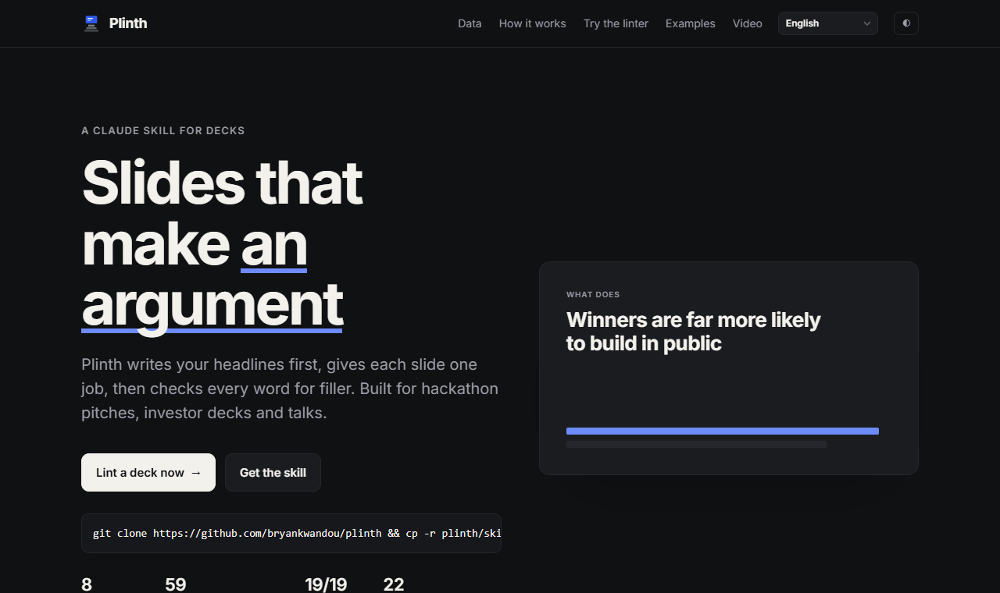
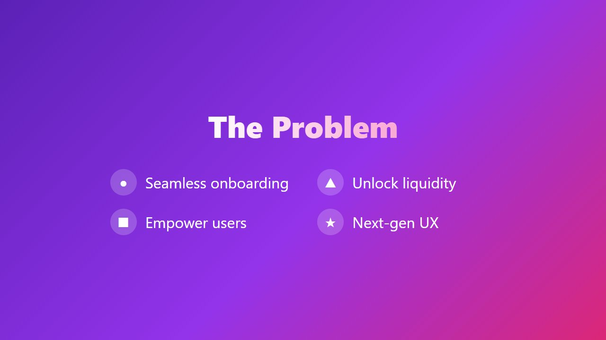
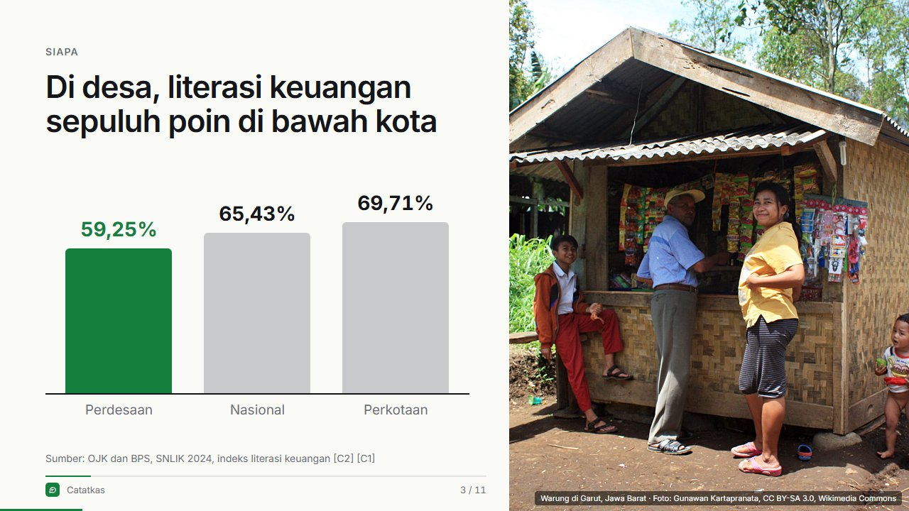
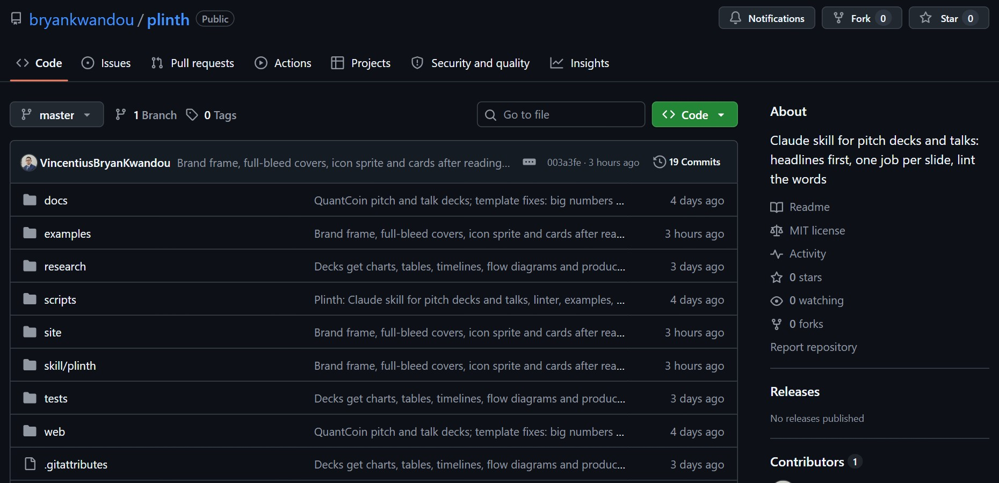

<title>Plinth</title>
<style>:root{--accent:#2F5BEA;--brand:#2F5BEA}</style>
<svg id="brandmark" hidden viewBox="0 0 40 40"><rect width="40" height="40" rx="10" fill="#2F5BEA"/><g transform="translate(8 8)" fill="none" stroke="#fff" stroke-width="2.4" stroke-linecap="round" stroke-linejoin="round"><path d="M4 20h16M6 16h12M9 12h6M11 4h2v8h-2z"/></g></svg>
<section class="brand media">
  <div class="logo"></div>
  <div class="fill">
    <h1>Plinth turns a founder's notes into a deck judges finish watching</h1>
    <p class="lede">A Claude skill for pitch decks and talks · Bryan Kwandou</p>
  </div>
  <figure class="pic screen"><figcaption class="credit">plinthdeck.vercel.app, live</figcaption></figure>
  <aside class="notes">Plinth is a skill for Claude that builds pitch decks and talks. You give it your notes, it gives back a deck with one claim per slide and a lint score for the words.</aside>
</section>
<section>
  <div class="eyebrow">Problem</div>
  <h2>Most AI-made decks look like every other AI-made deck</h2>
  <div class="row">
    <div class="c6"><p class="cap">Before: the average generated slide. Illustration made for this deck.</p></div>
    <div class="c6"><p class="cap">After: a Plinth slide, sourced chart plus a photo of the user</p></div>
  </div>
  <aside class="notes">You have seen this slide. Topic label as the title, four buzzwords as bullets. Generated decks drift toward it because it is the average of every deck online.</aside>
</section>
<section>
  <div class="eyebrow">Why it matters</div>
  <h2><em>One in eighteen</em> projects wins, and every one sends a pitch</h2>
  <div class="split">
    <div class="iso" data-of="18" data-hi="1" data-icon="flag" style="--s:72px"></div>
    <div><div class="kpis"><div class="hi"><b>293</b><span>winners out of 5,428 Solana hackathon projects</span></div></div>
    <p class="lede">The deck does not get you in; a clear argument inside it does.</p></div>
  </div>
  <p class="source">Source: Colosseum Copilot, pulled 2026-09-25 [P7]</p>
  <aside class="notes">Presence of a deck is universal, so it is not the differentiator. The argument is.</aside>
</section>
<section>
  <div class="eyebrow">Product</div>
  <h2>Headlines first, slides second, lint last</h2>
  <div class="flow rv">
    <div><svg class="ico"><use href="#i-search"/></svg><b>Research</b><span>Every number fetched, quoted, dated</span></div><em>→</em>
    <div class="hi"><svg class="ico"><use href="#i-doc"/></svg><b>Spine</b><span>Headlines as claims, read top to bottom</span></div><em>→</em>
    <div><svg class="ico"><use href="#i-chart"/></svg><b>Build</b><span>Charts, photos, screens, notes</span></div><em>→</em>
    <div><svg class="ico"><use href="#i-check"/></svg><b>Check</b><span>Words, sources, layout</span></div><em>→</em>
    <div><svg class="ico"><use href="#i-send"/></svg><b>Export</b><span>PDF and PPTX</span></div>
  </div>
  <aside class="notes">Five steps. The spine is the part people skip, and it is the part that matters most. The check step runs three scripts: the word linter, the source checker that re-fetches every cited page, and the layout checker that opens every slide in Chrome.</aside>
</section>
<section>
  <div class="eyebrow">Demo</div>
  <h2>The linter catches the slide from two minutes ago</h2>
  <div class="row">
    <div class="c7 frame mono specimen">$ node lint-deck.mjs before.txt<br>score 50/100<br>headline "The Problem" is a topic label<br>density  4 bullets. Three at most.<br>voice    "Seamless" is filler<br>voice    "Unlock" is filler<br>voice    "Empower" is filler<br>voice    "Next-gen" is filler</div>
    <div class="c5 frame mono specimen">$ node lint-deck.mjs after.txt<br>score 100/100<br>no issues</div>
  </div>
  <aside class="notes">This is the real output. Same content, rewritten with the rules: the before slide scores fifty, the rewrite a hundred. The linter runs in the terminal and on the website, using the same code.</aside>
</section>
<section>
  <div class="eyebrow">How it works</div>
  <h2>A skill file, eight references, one template and a zero-dependency linter</h2>
  <table class="t">
    <tr><th>File</th><th>Job</th></tr>
    <tr><td>SKILL.md</td><td>Routes to pitch.md, talk.md or review.md</td></tr>
    <tr><td>references/</td><td>Craft, voice, research, languages, scenarios</td></tr>
    <tr><td>assets/deck-template.html</td><td>Your deck: arrow keys, notes, print to PDF</td></tr>
    <tr class="hi"><td>scripts/lint-core.js</td><td>Same linter in the CLI and the browser</td></tr>
  </table>
  <aside class="notes">Everything is plain files. No server, no account. It runs anywhere Claude Code runs.</aside>
</section>
<section>
  <div class="eyebrow">Traction</div>
  <h2>Nothing yet; this is the first public release</h2>
  <div class="split">
    <div class="iso" data-of="50" data-hi="0" data-icon="user" style="--s:40px;gap:10px;width:500px;flex:none"></div>
    <div><div class="kpis" style="grid-auto-flow:row;gap:26px">
      <div class="hi"><b>0 of 50</b><span>first users so far: this is the first public release</span></div>
      <div><b>8</b><span>example decks, each scored and recorded on Solana devnet</span></div>
    </div>
    <p class="lede">One icon per user we will score before and after Plinth.</p></div>
  </div>
  <p class="source">Source: team plan; site/receipts.json for the eight devnet records</p>
  <aside class="notes">Being honest here. No users yet. The next number on this slide will be real.</aside>
</section>
<section class="media">
  <div class="eyebrow">Ask</div>
  <h2>Try it on your next deck and send us the before score</h2>
  <div class="flow rv" style="flex-direction:column;gap:12px">
    <div style="min-height:0"><b>1. Install</b><span>github.com/bryankwandou/plinth, MIT licence</span></div>
    <div style="min-height:0"><b>2. Lint your current deck</b><span>note the before score</span></div>
    <div class="hi" style="min-height:0"><b>3. Rebuild and send both scores</b><span>the first 50 go in our next report</span></div>
  </div>
  <figure class="pic screen"><figcaption class="credit">github.com/bryankwandou/plinth, public</figcaption></figure>
  <aside class="notes">That is the ask. Run it on a real deck, tell us what it missed.</aside>
</section>
